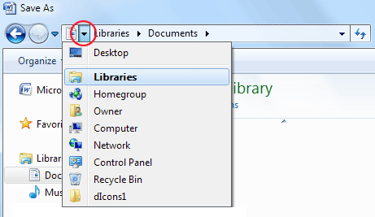

Free
computer Tutorials
|
Free
computer Tutorials
|
|
 home home |
|
|||||
Microsoft Word 2007 to 2010
Saving your workTo save your work in Word 2007, click the round Office button in the
top left of your screen. You should see a menu appear: In Word 2010, click the File tab at the top of Word: In both versions, when you click the Save item you'll see a dialogue box appear (This image is from Windows 7. The one for Windows Vista is very similar): There are three main areas to the Save dialogue box: Where do you want to save your document? What do you want to call it? What type of document do you want to save it as? We'll take the three areas in turn, starting with "Where do you want to save your document?" The "Where" is set right at the top. The default location
is in the Documents folder on your computer. You can see where
this is by clicking the arrow in the top left:  The dropdown menu is a list of locations on your computer. The image above is from Windows 7 and shows that we are in the Libraries folder. If you have Windows Vista, you won't see a Libraries entry. It will say Users. There will then be another one next to Users that has the user name you used when setting up your computer. For example: Users > Kenny > Documents. Inside the Libraries folder is another one called Documents. We're saving it to this folder. The larger area of the Save As dialogue box shows you the folders that are already in the Documents folder: You can create folders of your own to hold your work. So click the New Folder button at the top: You should see a new yellow folder appear in the main area of the Save As dialogue box, with some blue highlighting: The blue highlighting means that it is ready to be typed over. Type the name My WP Projects. Then press the enter key on your keyboard (or just click away). The folder will then be renamed: If you get it wrong, click back onto the folder. Now click again, and you should see the same blue highlighting. Or just right click the folder to see a new menu appear. Select Rename from the menu. Now that you have created a new folder, double click the folder name to move inside of it. Notice the location area at the top: The name of our folder has been added to the right of Documents, indicating that this new folder is inside of the Documents folder. In other words, there is a folder called Libraries, and inside of that another one called Documents. The folder we have created, the My WP Projects one, is inside of the Documents folder.
File NamesWe now need to come up with a name for this particular document that we're saving. If you have a look at the bottom of the Save As dialogue box you'll see two areas: one called File Name, and the other called Save as Type. The File Name area is where you type a name for your document. The Save as Type means which type of document is will be. Microsoft Word documents from 2007 onwards end with the letters docx. Previously, the letters where just doc. If you sent someone a Word document with the ending docx, somebody with version 2003 of the software would not be able to open your file. Simply because previous Office versions don't know how to handle the newer format. The reverse is not true, though: they could send you a file that ended with the letters doc and you would be able to open it up in Word 2007 or Word 2010. Microsoft Word allows you to save documents in a wide range of different formats. Click anywhere inside of the Save as Type area to see a list of the different formats: The image shows that we have Word 97 - 2003 Document in the Save as Type area. The three letter extension shows .doc. The first one on the list, however, is Word Document .docx, which is the one we want. Make sure this one is selected in your Save As dialogue box. Now have a look at the File Name area. It should say Doc1.docx. (It might just say Doc1, however, if you haven't enabled file extensions on your computer. If you can't see any file extensions, do the tutorial here on our site: Enable File Extensions. If you clicked the Save button now, your file will be called "Doc1". That's not a very descriptive name for a document, so we'll change it to something else. To give your document a different name, simply click inside the File Name text box. Delete everything in the text box. Type in a new name, something like Library Letter. Your Save As dialogue box should now look like the one below. When it does, click the Save button: You have now saved your work to your hard drive. To prove that it has indeed been saved, click the round Office button in the top left (or the File tab in Word 2010). Select Save As. When the Save As dialogue box appears, you should see the name of your file in the big white area: Click the Cancel button to get rid of the Save As dialogue box. You can continue to work on a document that has been saved. But if
you add more lines to your letter, or make any changes, you need to
keep saving your changes on regular basis. You don't have to use Save
As any more. You can just click the Office button or the File tab, then
click on Save. Or click on the circled icon in the image below. This
will update your document. Word 2007 Word 2010 A shortcut for saving your work is to hold down the CTRL key on your keyboard. Keep it held down and then press the letter S. Remember to save your work on a regular basis. It's not a pleasant experience to have worked on a document for some time only for your computer to break down. When you finally get your computer to work again, if you haven't saved regularly you'll find all that hard work lost forever, with no way to get it back!
OK, now that you know how to save a Microsoft Word document, let's
move on. The next section will be about highlighting text. Highlighting Text in Word 2007/2010 --> <--Back to the Word Contents Page View all our Home Study Computer Courses
|
||||||
|